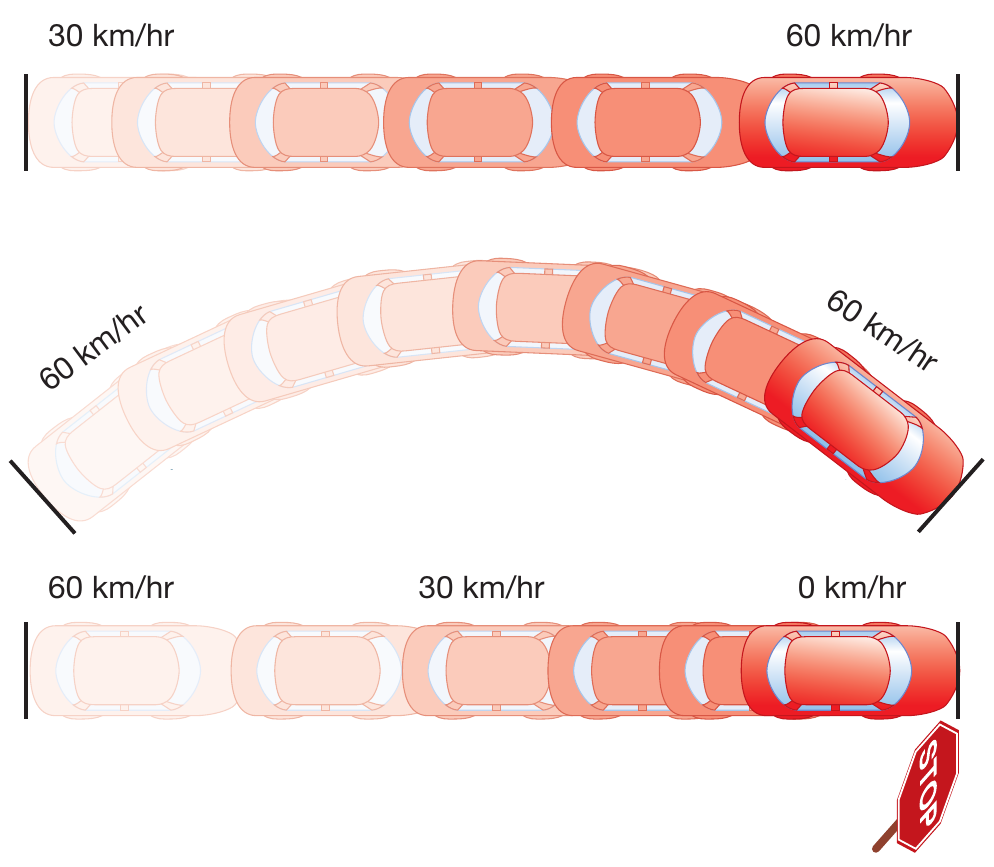
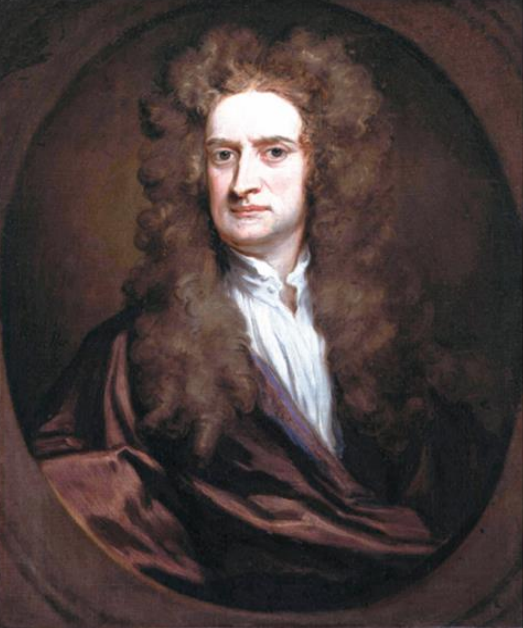
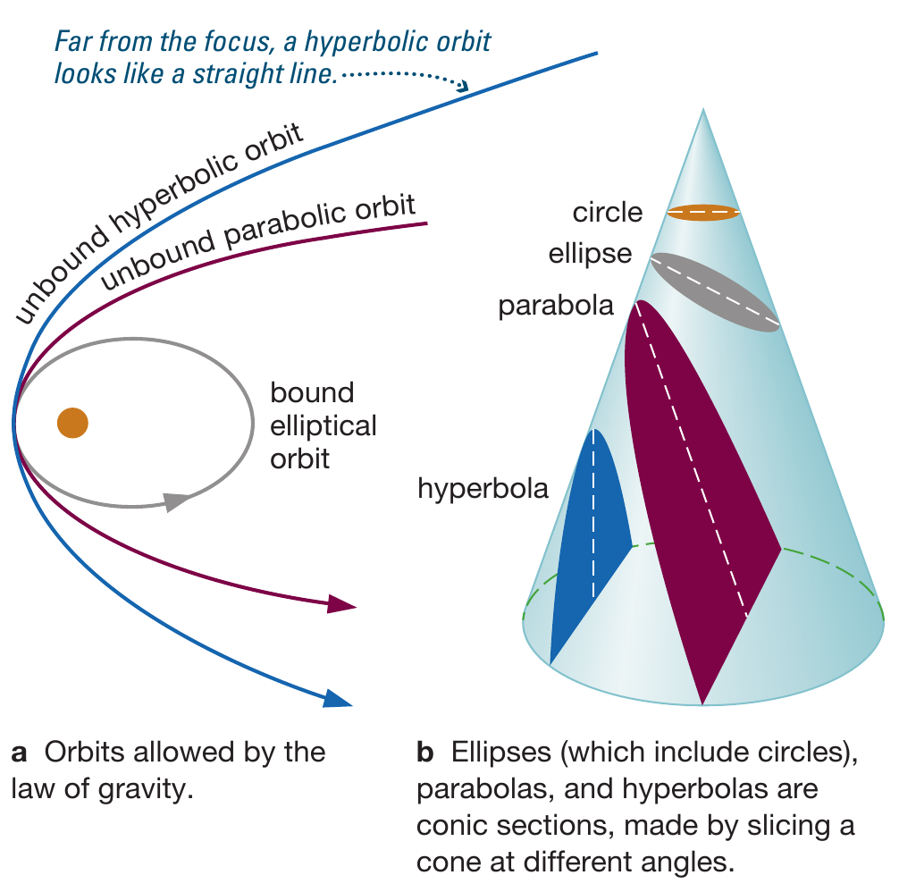

Reading: Chapter 4
Newton's laws of motion
We are able to describe ballistic motion (i.e., under the only influence of gravity) with extreme precision, enough to land a probe on a comet or asteroid. This achievement of humanity started with trying to understand planetary motion, the enunciation of Kepler's laws, and their physical explanation by Newton.
N.B.: Unfortunately, this achievement was also reached through a lot of military research, to understand how to shoot cannons best.
As we have already seen, describing how things move was a central task of ancient astronomy - with the whole issue of planetary motion.
Let's start by introducing basic concepts to characterize motion:
- position: it's a vector quantity that describes where something is w.r.t. a specified coordinate system (e.g., an ordered triplet of numbers \(\mathbf{x} = (x,y,z)\) determines space in 3 dimensions with respect to an orthogonal grid). It has the dimensions of length [L] (measured in cm, inches, or light years).
- velocity: \(\mathbf{v} = d\mathbf{x}/dt\) it's the time-derivative of the position, that is it describes how the position change w.r.t. time. This is also a vector quantity. The "length" of the vector is the speed, which only says the overall rate of change in position as a function of time, without having the direction. It has the dimensions of a length divided by time [L/t].
- acceleration: \(\mathbf{a} = d\mathbf{v}/dt\) is also a vector quantity describing the change in time of the velocity. It has the dimensions of a length divided times squared [L/t2]

Position, velocity, and acceleration describe the kinematics of objects, that is their position and how it changes in time.
Mind the notation here:
- \(\mathbf{x}\) in bold indicates vector quantities. Think of this as something that has a direction (e.g., velocity, \(\mathbf{x}=\mathbf{v}\)). More in general, it's a mathematical object that can be described with an ordered list of numbers (e.g., for velocity, the speed and two angles to define the direction in three-dimensional space)
- \(x\) in \(\mathrm{math font}\) or just normal is a scalar quantity, something that is entirely described by a number (e.g., a mass, \(x=m\), or a time \(x=t\)).
For an equation to make sense it also has to be mathematically consistent (not only dimensionally in terms of the physical units): for example, a vector cannot be equal or summed to a scalar.
Galilean invariance
While it is easy to "feel" an acceleration (think of a car turning a corner, the turning is a change in the direction of velocity, thus an acceleration), there is no way for an isolated observer to tell at what velocity they are moving.
This is the concept of Galilean invariance which Galileo argued for (in vulgar, to be understood by anyone!) using examples such as:
- if we drop an object from the mast of a moving ship, it doesn't fall behind the mast, but still in front of it. The object dropped "inherits" the velocity of the ship, it moves with it, and there is no way from within the ship to use this to measure how fast it is going.
- a group of butterflies in the haul of a ship will fly exactly in the same whether the ship moves or not, the butterflies don't get pushed to the end of the ship if it moves forward at constant speed!
This is the realization that allowed to bypass a lot of arguments against the motion of the Earth around the Sun.
The observations by Galileo and following experimental tests by his students and successors were later formalized into the first law of motion by Newton: an object keeps its velocity unless something changes it.
Falling motion
The acceleration of gravity is the change in velocity of an object falling. This is roughly constant on Earth (because the mass of the Earth is constant), and usually indicated with \(g\simeq10\) m s-2.
Galileo first proposed that objects of different masses will fall at the same speed in absence of friction (e.g., air). While it is unclear whether he really performed the experiment, this was performed a few years later from the bell-tower of Delft's church, and a simple experiment can be done with an object and a crumbled piece of paper.
The same experiment has been repeated in absence of atmosphere and lower gravity on the Moon:
From kinematics to dynamics
The quantities introduced above only describe motion (kinematics), without /explaining its causes, which is the task of the subfield of physics called dynamics.
Let's first introduce some more key quantities and see what is the relation between kinematics and dynamics.
Mass and weight
Mass is a fundamental quantity [M], measured e.g., in kg or pounds, and it measures the resistance to changes in velocity of a body. A truck has a larger mass than a ping pong ball, and it's much easier to move the latter because of its smaller mass.
Note that mass and weight are in principle two different things: mass is just the resistance to the change of velocity of a body, weight is the gravitational force that it feels. Mass is the same anywhere in the Universe, weight depends on the mass of the body exerting gravity, you would have the same mass on the Moon, but your weight would be lower.
Momentum
This is a physical quantity that "mixes" kinematic and dynamic quantities, and will be central in connecting the two. The momentum is the product of an object mass times its velocity, \(p = m \times v\), which has units [M L t-1].
To understand why it's important, imagine you're crossing a street and a bike hits you at a certain speed \(v\) vs. a truck hitting you at the same speed \(v\). While the speed is the same in both cases, the truck has much more momentum and will hurt you much more!
Angular momentum
If a body (regardless of its mass) has \(v=0\) in some reference frame, then it has also zero momentum. But what about a body rotating on itself? Even if overall it is not moving, every part of it has a velocity and a mass!
We can define an angular momentum usually indicated with \(J\) by considering the rotation axis of an object. The cross product between the (rotational) velocity of a point and the distance to the rotation axis \(r\) defines the specific angular momentum, times its mass, it gives the total angular momentum:
This quantity has the dimensions of [M L t-1], and it is also a vector quantity, perpendicular to the rotation plane. In absence of external torques, it is constant: the conservation of angular momentum is why you don't fall from a bike moving (to fall the angular momentum should change - direction - by changing the rotation plane of the wheels), but you do fall from a still bike (\(v=0 \Rightarrow J=0\), no angular momentum to conserve).
Force and torque
A force is by definition the change in momentum of an object.
If an object has a constant mass \(m\), then
which is the famous "second law of dynamics" formulated by Newton. A force is thus an acceleration per unit mass, that is a change in velocity per unit mass.
By analogy we can consider what can change the angular momentum, e.g., when you try to open a door and make it turn around its hinges. Like \(\mathbf{J}\) is the cross product of the momentum times the distance to the rotation axis, we can take the cross product of a force with the distance to the rotation axis to define a torque:
The torque is what changes the angular momentum, and it a force applied at a certain distance from a rotation axis.
N.B.: The torque here is exactly what is reported in car advertisement, a measure of how the engine can impart rotation by "twisting".
N.B.: A "torque" is not a force, unlike what is incorrectly written in the book. A torque is the product of the applied force × the lever arm w.r.t. a specified rotation point (e.g., the hinges of a door). It has the dimensions of a [F] × [L] ≠ [F]. It is in a sense the "rotational equivalent" of what a force is in a "linear" context.
The "laws" of dynamics
In the Philosophiae Naturalis Principia Mathematica, Newton formalized the three laws now named after him which connect physics across sub- and super-lunar worlds (making the distinction moot), and unify kinematics and dynamics.
- A body moves at constant velocity unless there is a net force applied to it
- Force is the change of momentum of an object \(\mathbf{F}= d\mathbf{p}/dt = m\mathbf{a}\)
- For each applied force, there is an equal and opposite reaction.
The first law formalizes mathematically Galilean invariance: in absence of forces an object keeps its velocity. For example, the object dropped from the mast of a boat in Galileo's gedanken experiment does not feel any forces in the horizontal direction. Therefore it keeps the horizontal velocity it had (from the boat motion), and falls exactly below the mast, because it keeps on moving as fast as the mast throughout its fall.
The second law defines formally the concept of force. Note that there must be a force every time there is an acceleration, so when you take a turn with the car (changing the direction of the car and thus accelerating it), there needs to be a force applied (the friction between the wheels and the road). If that force disappear, the car would stop turning, e.g., if there is a patch of ice along the curve, it would decrease the friction and lead to the car turning less (or not at all!).
In a "Newton's pendulum", ball 1 hits ball 2, exerting a force on ball 2 that accelerates it, and at the same time ball 2 exerts a "reaction" force (but there is no time delay) on ball 1 that accelerates it too, from it's velocity to zero. Then ball 2 and 3 interact in the same way and so on:
N.B.: In our discussion on this pendulum we are explicitly leaving out the air and the connection parts with the strings, where friction is another force in the system. Friction complicates significantly the description and explains why ultimately, on a desk, these toys will stop.
The third law explains also why rockets fly: they push out exhaust gas, which in turns pushes the rockets up.
Universal law of Gravitation
There are a lot of legends on how Newton came up with the first great unification of physics and astronomy by demonstrating that the laws governing how objects fall on Earth also explain the Keplerian laws describing the kinematics of planets.
What is certainly true is that during a pandemic in 1666, Newton, far from being isolated, and instead in constant and sustained communication with the scientific community, started to develop this unification model.

The key insight is that the force causing the acceleration of a falling object (e.g., an apple in Earth's own gravity, a metaphor used to highlight Newton's landowning noble status most likely), is the same force as the one governing the orbit of the planets.
where \(F_{1}\) is the attraction of \(m_{1}\) applied to \(m_{2}\), \(r\) is their distance and \(G\) is a constant, which Newton determined analyzing the orbital motion of the planets and the Moon, \(G=6.67 \times 10^{-8}\) cm3 g-1 s-2.
This force is directed along \(\mathbf{\hat{r}}\) which denotes the line connecting \(m_{1}\) and \(m_{2}\), and decreases with the square of the distance \(r\): if \(m_{1}\) and \(m_{2}\) increase their distance by 2× or 10×, the gravitational force between them decreases by 22=4× or (10)2=100×.

Of course, corresponding to \(F_{1}\), by the third law, there is an equal and opposite \(F_{2} = - F_{1}\): when you jump up, the Earth pulls you down, but at the same time you pull up the Earth! Why is it that you move a lot, but the Earth barely does?
Connection with Kepler's laws
Kepler's laws are an empirical description of the kinematics of Mars and (by extension) the other planets. Newton's theory of gravity gives a dynamical explanation of these empirical observed facts, explaining and extending the observations of (…, Tycho Brahe,) Kepler.
Conical orbits
For instance, Kepler correctly realized that the orbit of Mars (and by extension all planets) are ellipses with the Sun occupying a focus.
Solving the equations of motion for two point masses (representing, e.g., Sun and Mars) interacting just through gravity according to Newton's laws
one obtains a more general solution that the one empirically derived by Kepler: the solution of the two body problem!
Elliptical orbits are just one of the possibilities, which are in general all conic section:

- Planets orbit on ellipses (and the special case of an ellipse with zero eccentricity, \(e=0\), that is a circle)
- increasing the orbital energy, orbits become parabolic, meaning they are open: an object on a parabolic orbit passes by the Sun once and never returns (e.g., some comets)
- increasing the energy even further, the orbits become hyperbolae, which are also open curves (no return). For example, [][Omuamua], the first interstellar object observed passing through the solar system was on an hyperbolic orbit. N.B.: Especially in the debate on Omuamua's orbit, factors other than gravity play a role (e.g., the loss of mass by the object due to the Sun heating it up and causing evaporation)
This is a perfect example of scientific progress: the theoretical update formulated by Newton explains and extends the empirical observations fitted by Kepler and recovers the previous result as a particular case (here: bound orbits).
Conservation laws in physics
In my opinion, one of the most beautiful results of theoretical physics is due to Emmy Noether, which states that for every symmetry in nature, there is a corresponding conserved physical quantity.
Newton's laws are a consequence of the conservation of these physical quantities due to the symmetries of nature!
N.B.: What does it mean to be conserved for a quantity? It literally means that it does not change (in time or under certain transformation). For an example not involving time: the "shape" of an object is conserved under rotation.
Conservation of momentum
This is a consequence of the symmetry of space-time with translations (side-ways motions): the dynamics of a system, what causes its motion, does not depend on where you are, you can shift around in any direction and observe the same phenomena related to momentum.
The laws of dynamics follow from this: in absence of an external force a body maintains its velocity and its mass, therefore also its momentum \(\mathbf{p}=m\mathbf{v}\), which is conserved (1st Newton's lawnil). And if there is an external force on a body (a source term for its momentum), there is an equal and opposite force exerted by this body on the forcing agent, so that in total the net force on both body and agent is zero and the total momentum remains constant (3rd law).
Conservation of angular momentum
This is a consequence of symmetry of space-time w.r.t. rotations, and it is a vector quantity:
where \(\mathbf{p}=m\mathbf{v}\) is the momentum discussed above and \(\mathbf{r}\) is the distance to the rotation axis.
Because it is a vector, it is characterized by multiple components (\(x,y,z\)): conservation of angular momentum requires the total angular momentum to be conserved, which means also in direction and not only in amplitude.

Conservation of angular momentum examples:
- bike: if not moving (\(v=0\Rightarrow p=mv=0\)) there is no angular momentum (\(J=r\times p\equiv0\)) and it is very hard to stand on it without falling. If moving, then \(J\neq0\) needs to be constant, including in direction: it gets easier to ride without falling because to fall the direction of the angular momentum!
- ballerina: a spinning ballerina closes their arms, this decreases \(\mathbf{r}\), so to keep the angular momentum constant, the velocity \(\mathbf{v}\) has to increase.
- Earth's rotation: this carries angular momentum too, which is conserved. In absence of any perturbation, Earth would continue to rotate with the same \(\mathbf{r}\) and \(\mathbf{p}\) around the Sun (same for the Moon around the Earth, other planets, etc.)
3rd Kepler law
We can understand the 3rd Kepler's law as a consequence of angular momentum conservation: if the orbit is elliptic, then the distance planet-Sun is varying along the orbit, \(\mathrm{r} \equiv \mathrm{r}(t)\). To keep \(\mathrm{J} = \mathrm{r}\times\mathrm{p}\) constant then, also the momentum \(\mathrm{p}\equiv\mathrm{p}(t)\). Since \(\mathrm{p}=m\mathrm{v}\), and since the \(m\) of the planet does not change year-by-year, then the velocity \(\mathrm{v}\equiv\mathrm{v}(t)\): the orbital velocity of the planet cannot be constant!
Specifically, from the conservation of \(\mathrm{J}\) one finds that when \(\mathrm{r}\) is smaller (at pericenter, closer to the star), then \(\mathrm{v}\) needs to be larger: planets pass faster at their closest point to the Sun, and spend more time farther away.
Note that Kepler's 3rd law already described this empirically, but conservation of angular momentum provides the theoretical basis to understand this observed phenomenon.
Conservation of energy
This is a consequence of the symmetry of space-time for temporal translation (yesterday is the same as today).
Energy is by definition the capacity of a system to do work, where work is the product of a force \(F\) times a displacement \(d\):
Since this is a dot-product, it produces from two vectors (force and displacement) a scalar. Energy is also a scalar, and it can come in various forms
Kinetic
\(E_{kin} = \frac{1}{2}mv^{2}\)
Thermal
Thermal energy is a form of kinetic energy due to the random agitation of constituents (e.g., molecules of a gas). \(E_{th} = k_{b}T\)
What distinguishes the "thermal" energy is the randomness of the motion, as opposed to the ordered motion of a system: for example, throwing a ball in a direction causes an "ordered" global motion of each molecule of the ball in that direction (by throwing you gave a global kinetic energy and momentum to the ball), but every molecule is also wiggling in a random direction, often much "faster" than the global velocity, but leading to a very small displacement before molecules "bump" into each other and change their (random) direction of motion.
To calculate the "thermal velocity" (the random component of the velocity due to thermal motion), see this online tool. for example air is mostly (∼70%) made of nitrogen molecules \(\mathrm{N}_{2}\), made of two nitrogen atoms, each having a mass of \(\sim14\) atomic units (7 protons + 7 neutrons), so the molecule has a mass \(\sim28\) atomic units, or in other units, 4.651734×10−26 kg. At a room temperature of 300K, this corresponds to random velocities of the air of 516 m/s!
N.B.: the temperature measures the average kinetic energy of particles in a system due to their random motion. The thermal energy measures total energy of a system due to this, which also depends on the density of he system (think of putting your hand in an oven or in a pot of boiling water: the over is hotter, but the boiling water is denser and thus has a higher thermal energy).
Radiative
Energy in the radiation field, i.e., carried by the light (photons)
\(E_{rad}=\frac{1}{3}a T^{4}\)
Potential
It comes in many form, depending on the kind of process that can release it (e.g., transform it into kinetic energy), e.g. chemical potential energy for an explosive.
For gravitational potential energy in a constant gravity \(g\) (e.g. on Earth \(g \simeq 10\mathrm{m s^{-2}^{}}\)): \(E_{pot }= mgh\)
Binding energy
The amount of energy you have to provide to a system for breaking it into its component and pull them apart at infinity, or in other words the amount of energy that had to be spent to assemble it. This concept is important because often astrophysical processes are powered by breaking objects and releasing this energy (e.g., the explosion of a star!), or viceversa a system loses energy storing it into the binding energy of something being assembled.
Rest-energy
\(E=m c^{2}\)
N.B.: In reality the formula is \(E=m\gamma c^{2}\) where \(\gamma=1/\sqrt{1-v^{2}/c^{2}}\) and \(v\) is the velocity of the object of mass \(m\) in the current reference frame.
Energy transforms from one form or the other